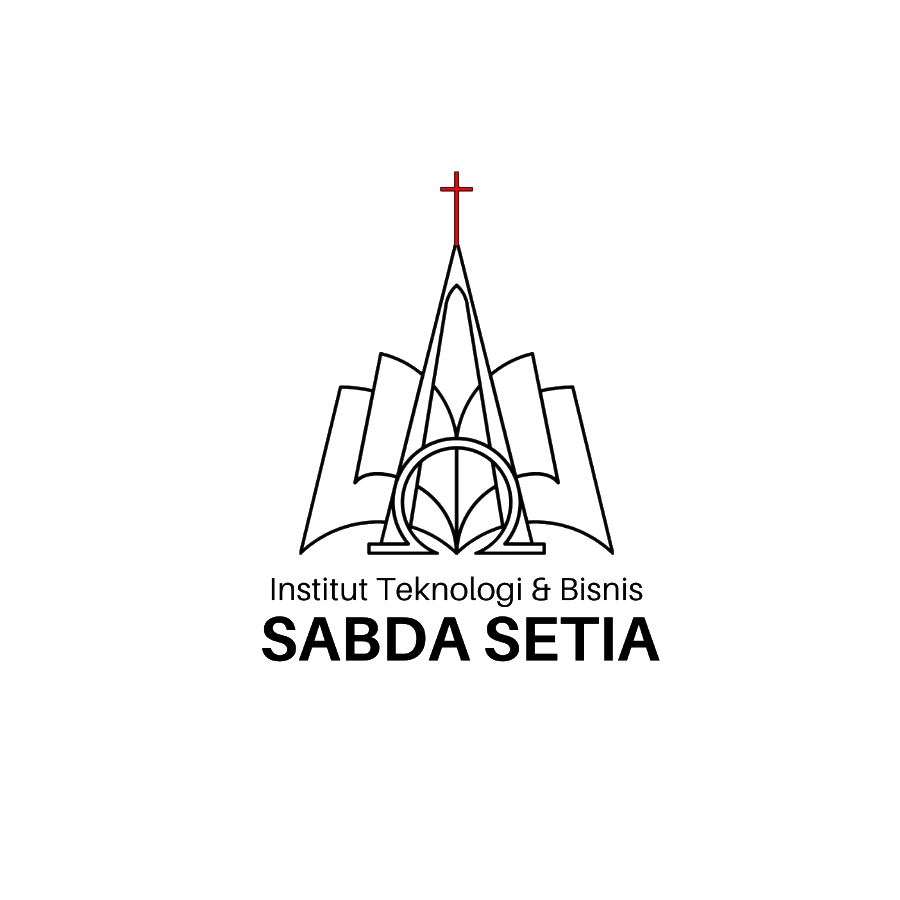

|
|
| Institut Teknologi & Bisnis Sabda Setia (ITBSS) adalah kampus yang berdiri pada 2021. Kampus ini memiliki tekad untuk mendorong kemajuan negara hingga tingkat global. Berikut adalah Visi dan Misi ITBSS. |  |
Visi ITBSS:Lembaga Pendidikan Tinggi yang berlandaskan nilai-nilai Kristiani dalam mempersiapkan sumber daya manusia yang unggul. |
|
Misi ITBSS:Mendidik dan melatih sumber daya manusia berkarakter, terampil, siap berkompetisi secara global dan membawa dampak positif bagi lingkungan sekitarnya. |
|